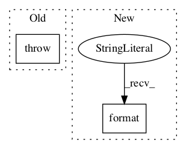

b5ae1c6bde39f5130c975992198f1f8ee5200f9a,tf_agents/agents/dqn/dqn_agent.py,DqnAgent,_check_action_spec,#DqnAgent#Any#,265

Before Change
// TODO(b/119321125): Disable this once index_with_actions supports
// negative-valued actions.
if not all(spec.minimum == 0 for spec in flat_action_spec):
raise ValueError(
"Action specs should have minimum of 0, but saw: {0}".format(
[spec.minimum for spec in flat_action_spec]))
def _setup_policy(self, time_step_spec, action_spec,
boltzmann_temperature, emit_log_probability):
After Change
// TODO(oars): Get DQN working with more than one dim in the actions.
if len(flat_action_spec) > 1 or flat_action_spec[0].shape.rank > 0:
raise ValueError(
"Only scalar actions are supported now, but action spec is: {}"
.format(action_spec))
spec = flat_action_spec[0]
In pattern: SUPERPATTERN
Frequency: 3
Non-data size: 2
Instances
Project Name: tensorflow/agents
Commit Name: b5ae1c6bde39f5130c975992198f1f8ee5200f9a
Time:
Author: null
File Name: tf_agents/agents/dqn/dqn_agent.py
Class Name: DqnAgent
Method Name: _check_action_spec
Project Name: tensorflow/models
Commit Name: 2c962110fd5b9827da525e14089fe16258c36fd0
Time:
Author: null
File Name: research/deeplab/utils/get_dataset_colormap.py
Class Name:
Method Name: label_to_color_image
Project Name: deepmipt/DeepPavlov
Commit Name: 29ee3e34123191e7b444915b6be56edd8699aa36
Time:
Author: null
File Name: deeppavlov/core/commands/infer.py
Class Name:
Method Name: interact_model